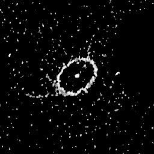

Example of Image Deconvolution
- SN 1987A, FITS file (273600 bytes).
- PSF, FITS file (273600 bytes).
- Multiresolution Richardson-Lucy result,
FITS file, 273600 bytes.

- Result as previous, but with 500 iterations.

- History of processing.
(Note: all JPEG images displayed histogram-equalized.)